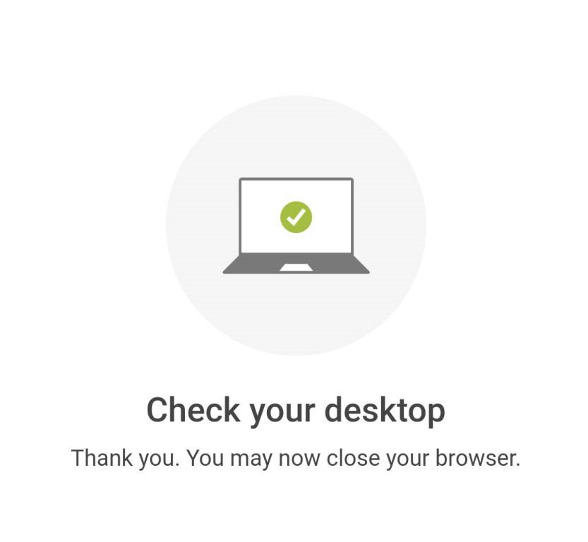

本篇文章不構成投資建議，僅作為資料整理之用
或許你需要先拉到最下面看看我對Swarm的想法，再決定要不要看教學步驟。🤐 如果你很著急，直接點註冊推薦碼，獨自開始你的ICO~
時間線整理
CoinList註冊截止：06/11 20:00
主網上線：06/13 第一批公募：June 14 17:00(UTC) - June 15 04:59(UTC) 第二批公募：June 15 17:00(UTC) - June 16 04:59(UTC) 解鎖日期：08/02
價格：1.92美元 第一批用戶最少購買100美元，最高500美元。 第二批用戶最少購買100美元，最高10,000美元。 當第一種代幣有剩餘才會開啟第二批。
早期私募大老的價格 2020/09 0.2美元一顆，募了200萬美元 2020/12 0.25美元一顆，募了400萬美元
步驟整理
- 註冊CoinList
- 到公募頁面按下Register Now
- 完成KYC
- 回答題目(蠻難的)
- 多因素驗證
- 將USD轉進錢包
- 等6/14當天排隊收到排隊序號，有輪到你的話確認交易。
1. 註冊CoinList
從我的推薦連結註冊消費100Usd能得到10usd的回饋，你也可以選擇拿掉我的推薦碼用官網註冊。
 要注意名字在前姓氏在後，我是用護照的英文姓名，或許這樣KYC能比較快一些。
去收email確認信，注意註冊時和收這個信要用同一個裝置，我當時註冊用電腦，收信用手機就多搞了一次…
之後多登入不同台電腦或手機，也會需要再次收信。
要注意名字在前姓氏在後，我是用護照的英文姓名，或許這樣KYC能比較快一些。
去收email確認信，注意註冊時和收這個信要用同一個裝置，我當時註冊用電腦，收信用手機就多搞了一次…
之後多登入不同台電腦或手機，也會需要再次收信。
2. 到公募頁面按下Register Now
如果你英文不錯應該能自己完成。👊
來到3. 完成KYC
 這一頁告訴你無法參加的地區。包括加拿大、中國、美國和其他(伊朗、北韓、敘利亞、古巴、部分烏克蘭)，其實點進去看會發現美國應該是有一部分可以一部分不行，我不確定。
按下Get started
這一頁告訴你無法參加的地區。包括加拿大、中國、美國和其他(伊朗、北韓、敘利亞、古巴、部分烏克蘭)，其實點進去看會發現美國應該是有一部分可以一部分不行，我不確定。
按下Get started
 身份我選個人Person
我用王大明的假名，一樣使用英文姓名
下方要注意的大概是不能一人多號(當然!)
身份我選個人Person
我用王大明的假名，一樣使用英文姓名
下方要注意的大概是不能一人多號(當然!)
We may ask you to provide proof of residence.可能會需要提供居住證明。 勾勾確認這個資訊是真實準確的
要填寫居住地址了，你應該會需要中華郵政網幫你翻譯你家地址。(夠貼心吧🤙) 填入出生日期、手機號碼
開始驗證 ⚠停留此頁面太久會跳出!
 選第一個護照
選第一個護照
如果你現在用電腦註冊，選第一個就會使用電腦鏡頭開始驗證。 我選了下面，用手機。
 這邊可以選寄一封Email給自己，或是手機掃QRcode開始填。我選QRcode
⚠電腦網頁這邊不可以關掉！
這邊可以選寄一封Email給自己，或是手機掃QRcode開始填。我選QRcode
⚠電腦網頁這邊不可以關掉！
接下來沒有截圖，你要堅強！🙏 你用了手機掃描了你的QRcode後，一樣選擇Passport，然後會讓你把Passport對齊中間的框框，按下拍照。他會問你照片是否清晰可見。
接下來掃描你的臉，把你的臉對齊橢圓形會自動掃描(我的掃描是黑白灰色的掃瞄，難道是某種隱私功能？🤔)
掃描完成，上傳中。當你在手機看到下面這張圖  就可以繼續電腦操作囉！
4. 回答題目(蠻難的)
好，我們來到題目區。這裡我直接給你解答，找幾題重要的來講一下。 注意一下，答案好像會換順序，要看仔細。 填錯也沒關係，他會告訴你第幾題有誤。
- Swarm建立在？以太坊上。
- Swarm的技術paper是？Book of Swarm。
- 誰參與Swarm的資料經濟？節點營運者。
- 這次CoinList sale有多少代幣(第一批+第二批)？5,173,934枚代幣。
- 第一批核第二批的代幣數量怎麼分？第一批分完後，剩下的會分到第二批。
- Swarm的銷售機制？使用者會在Waiting room裡面拿到隨機位置，sale開始後才到的使用者會被放在waiting room裡的使用者的後面。
- 這次sale能用哪些貨幣購買？BTC、ETH、USDC、USDT。
- 價格和最多購買量？一個token1.92美元。第一批的限制為500美元。第二批的限制為10,000美元。
- 如果有人送出交易卻沒有完成會發生甚麼事？該筆購買可能會被取消，該使用者可能會被禁止未來參與coinList。
- 要在哪裡參與？CoinList.co
- 如果使用者用機器人搶ICO？使用者的帳號被停權，購買被取消。
比較重要大概是6.
5. 多因素驗證
用多因素驗證保護你的帳號。右下角可以Skip，但如果公募開始你才再用這個…可能會尷尬😏 有Google authenticator和Duo Mobile兩個驗證。Google的比較主流，其他交易所也常用。我選google。
這邊一樣不能截圖，要堅強！💪 下載App之後(我是Android，沒用過ios)，右下角的+號點下去，掃Qrcode。會跳出來一行CoinList(你的email)，還有一行六位數字。將數字填入旁邊的框框。 之後有需要Multi-factor authentication的時候也是同理，這個六位數字會60秒更新一次。另外碎碎念一下，曾經有個大富翁在交易所用多因素驗證Google+簡訊，還是被盜，因為他的手機直接被駭…恩…
 來到這一頁，代表你已經註冊成功！你已經註冊參加Swarm ICO。
來到這一頁，代表你已經註冊成功！你已經註冊參加Swarm ICO。
不過這個時候，你的錢包目前是空的！🧐
6. 將USD轉進錢包
這部分有點複雜，如果你從未轉過加密貨幣，你可能會搞錯。所以我們派出…Gif動圖來幫助你💪
CoinList內建錢包，所以你沒辦法用外部「錢包」導入(MetaMask、Trust Wallet、Blocto等等)，只能將「加密貨幣」轉入CoinList錢包。(USDC、USDT、ETH等等)

注意這次的活動只能用USDT、USDC、ETH、BTC購買Swarm。我推薦你用USDC或USDT轉入。你需要將
我的想法
會放在最下面的原因是，可以方便你搭配延伸資料閱讀。
好消息
有消息指稱，第一輪的私募價格為0.25，目前有人再場外交易以30美元購買。但是，此消息目前存疑！
壞消息
- Swarm並不是第一款去中心化儲存項目，這篇整理了他的前輩們(0x資訊2021/05/13)、(區塊客2021/04/12)。簡單來講，沒有誰特別出色到一定能贏到最後，也可以說是各有擅場。
- 另一個問題是，有甚麼資料一定非得要去中心化儲存不可？中心化儲存的AWS、Google都強太多了。唯一我想到一定要去中心化儲存的大概是維基解密…
- 在這篇整理的「募款歷史」中，你會發現投資的機構並不豪華。(但是你看看Fei Protocol翻車🤣)
- 另外還有負面的三大問題待解，也應該要先看看。我自己認為商業模型讓人擔憂😢
參考資料
THE BOOK of Swarm Swarm推特，目前1萬Fellower。 Discord群，目前30,000名成員。 Reddit群，目前869Members。有趣的是目前有人對CoinList不太滿意。
Swarm一詞可能源自於中本聰2010/12/11在論壇上的發文。「the swarm is headed towards us」。
其他去中心化儲存
另一款去中心化儲存項目Arweave。文章很長，雖然內容是在講AR，但很適合你初步認識去中心化儲存世界。是獨立建另外一條鏈的。(待確認，也有人認為AR算是IPFS協議上的應用層)